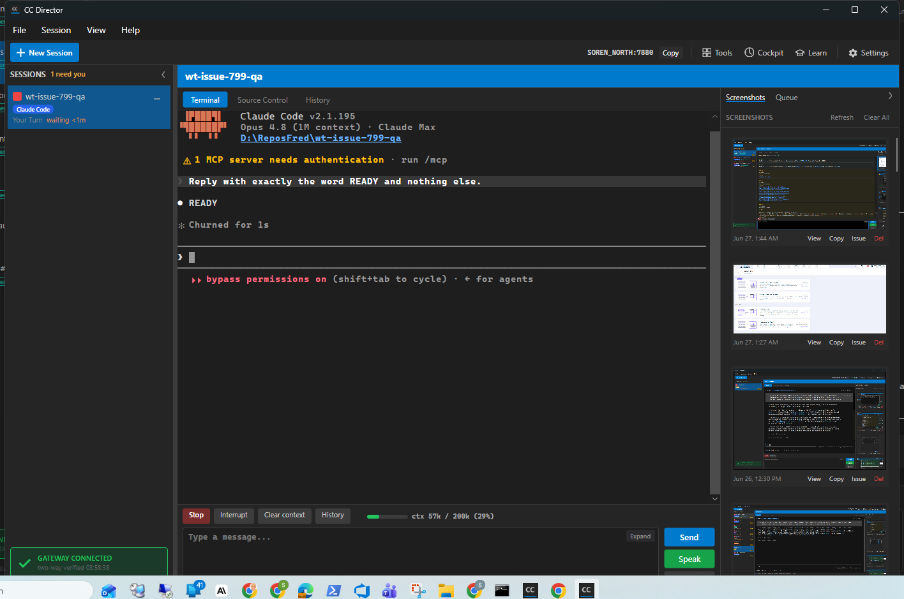

Title: [Desktop] Live context-usage gauge in the SessionActionBar (Claude)
PR: #801, branch issue-799-context-gauge
Verified by: QA Agent (independent session, slot 14 test Director, port 7880)
Date: 2026-06-27
Independent verification: the QA session built the PR branch in its own checkout, launched its own isolated test Director (slot 14), created a real Claude session via the Control API, drove a turn, and produced its own proof. The Developer report and screenshots were NOT relied on.
| # | Criterion | Expected | Actual | Evidence | Verdict |
|---|---|---|---|---|---|
| 1 | Catalog lists ContextUsage on ClaudeCode only | ContextUsage present on ClaudeCode, absent on Codex/Pi/others | Live GET /settings/agents/catalog: ClaudeCode caps include ContextUsage; Codex, Pi, Gemini, OpenCode, Cursor, Grok, Copilot, RawCli do NOT |
catalog-capabilities.json | PASS |
| 2 | GET /sessions/{sid}/context returns valid DTO | HTTP 200, UsedTokens > 0, PercentUsed 0-100, WindowTokens set | HTTP 200; {"usedTokens":57349,"windowTokens":200000,"percentUsed":28.7,"asOfUtc":"2026-06-27T07:59:14.457Z"} |
context-endpoint.json | PASS |
| 3 | Desktop gauge in SessionActionBar reading like ctx 42k / 200k (21%) | Gauge shows ctx <used> / <window> (<pct>%) | Live Claude session gauge reads ctx 57k / 200k (29%) |
qa-gauge-live.png | PASS |
| 4 | Bar color neutral <70%, amber 70-90%, red >90% | Three boundaries asserted; one colored bar screenshot | Avalonia SelectBand unit tests pass at 69.9 (neutral), 70/80/90 (amber), 90.1/99/100 (red); live bar is green/neutral at 29% | unit tests (Avalonia 19 passed); qa-gauge-live.png | PASS |
| 5 | Window denominator 1,000,000 for [1m] Opus, 200,000 for standard | model-id -> window mapping unit test | WindowTokensForModel returns 1,000,000 for [1m] ids, 200,000 for opus/sonnet/haiku/fable; tests pass | unit tests (Core 31 passed) | PASS |
| 6 | Raw-number fallback for unmapped model | WindowTokens/PercentUsed null; raw used count; neutral bar | ReadContextUsage on gpt-4o model -> WindowTokens null, PercentUsed null, UsedTokens raw; SelectBand(null)=Neutral; FormatLabel = "ctx 12k" | unit tests (Core + Avalonia) | PASS |
| 7 | Non-Claude session shows NO gauge | Capability gate hides gauge / endpoint 404 for non-flag drivers | Catalog assertion (criterion 1) confirms only ClaudeCode declares ContextUsage; endpoint returns 404 for drivers without the flag; SessionActionBar gates ContextGaugePanel on the flag | catalog-capabilities.json; SessionContextEndpoint.cs; SessionActionBar.axaml.cs | PASS |
| 8 | ReadContextUsage throws NotSupportedException without flag | Throws on CodexDriver / PiDriver | Unit test asserts NotSupportedException for CodexDriver and PiDriver; interface default throws | unit tests (Core 31 passed) | PASS |
| 9 | Gauge updates off the UI thread, reflects a new turn within ~5s | No synchronous file I/O on UI thread; value rises after a turn | RefreshContextGauge reads via await Task.Run(() => driver.ReadContextUsage(...)) off-thread; DispatcherTimer polls every 4s; live gauge shows 57k/29% reflecting the completed READY turn |
SessionActionBar.axaml.cs; qa-gauge-live.png | PASS |
| 10 | Build clean + agent-expert README/claude-code.md updated | dotnet build clean; docs describe ContextUsage | Slot-14 build: 0 warnings / 0 errors; README adds a "Context-usage reporting" section + matrix row; claude-code.md adds the ContextUsage capability line | build output; git diff of agent-expert docs | PASS |
The live screenshot shows the rest of the UI intact: Stop / Interrupt / Clear context / History buttons present, terminal rendering correctly, Send / Speak controls working, Gateway connected. No adjacent breakage observed. CenCon method checks: unit tests added for the new logic, agent-expert docs updated, the new endpoint is loopback and capability-gated (404 for non-supporting drivers), no security rule violated.
